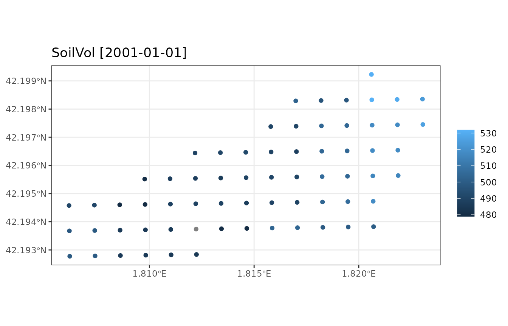

WatershedSimulations.RmdThe aim of this vignette is to illustrate how to use
medfateland to carry out simulations of forest function
and dynamics on a set of forest stands while including lateral water
transfer processes. This is done using functions
spwb_land(), growth_land() and
fordyn_land(); which are counterparts of functions
spwb(), growth() and fordyn() in
package medfate. As an example, we will use function
spwb_land(), but the other two functions would be used
similarly.
Preparing inputs for watershed simulations can be tedious. Here we load a small example watershed included with the package, that can be used to understand the inputs required:
data("example_watershed")
example_watershed## Simple feature collection with 66 features and 19 fields
## Geometry type: POINT
## Dimension: XY
## Bounding box: xmin: 1.806159 ymin: 42.19278 xmax: 1.823062 ymax: 42.19923
## Geodetic CRS: WGS 84
## # A tibble: 66 × 20
## geometry id elevation slope aspect land_cover_type
## * <POINT [°]> <int> <dbl> <dbl> <dbl> <chr>
## 1 (1.820606 42.19923) 1 1162 11.3 79.2 wildland
## 2 (1.81699 42.19829) 2 1214 12.4 98.7 agriculture
## 3 (1.818201 42.1983) 3 1197 10.4 102. wildland
## 4 (1.819412 42.19832) 4 1180 8.12 83.3 wildland
## 5 (1.820623 42.19833) 5 1164 13.9 96.8 wildland
## 6 (1.821834 42.19834) 6 1146 11.2 8.47 agriculture
## 7 (1.823045 42.19835) 7 1153 9.26 356. agriculture
## 8 (1.815796 42.19738) 8 1237 14.5 75.1 wildland
## 9 (1.817007 42.19739) 9 1213 13.2 78.7 wildland
## 10 (1.818218 42.1974) 10 1198 8.56 75.6 agriculture
## # ℹ 56 more rows
## # ℹ 14 more variables: forest <list>, soil <list>, state <list>,
## # waterOrder <int>, waterQ <list>, queenNeigh <list>, channel <lgl>,
## # depth_to_bedrock <dbl>, bedrock_conductivity <dbl>, bedrock_porosity <dbl>,
## # snowpack <dbl>, aquifer <dbl>, represented_area_m2 <dbl>, crop_factor <dbl>Some of the columns like forest, soil,
elevation, or state, were also present in the
example for spatially-uncoupled simulations, so we will not repeat them.
The following sub-sections present additional columns that are relevant
here.
Simulations over grids normally include different land cover types.
These are described in column land_cover_type:
table(example_watershed$land_cover_type)##
## agriculture rock wildland
## 17 1 48Local and landscape processes will behave differently depending on the land cover type.
Note that the sf structure does not imply a grid per
se. Point geometry is used to describe the central coordinates of
grid cells, and two additional columns are used to convey information
about the grid. Column queenNeigh is used to specify
adjacency relationships between grid cells, while
represented_area_m2 is used to define the area of cells in
square meters.
Columns aquifer and snowpack are used as
state variables to store the water content in the aquifer and snowpack,
respectively.
Since the landscape contains agricultural lands, we need to define crop factors, which will determine transpiration flow as a proportion of potential evapotranspiration:
example_watershed$crop_factor = NA
example_watershed$crop_factor[example_watershed$land_cover_type=="agriculture"] = 0.75As for the call to function spwb_spatial() we will use
the same weather (i.e. examplemeteo) across the watershed.
To speed up calculations we call function spwb_land() for a
single month.
dates <- seq(as.Date("2001-01-01"), as.Date("2001-01-31"), by="day")
res_ws <- spwb_land(example_watershed, SpParamsMED, examplemeteo, dates = dates, summary_frequency = "month")## ## ── Simulation of model 'spwb' over a watershed ─────────────────────────────────## ℹ Checking inputs## • Hydrological model: TETIS##
[36mℹ
[39m Checking inputs
• Grid cells: 66, patchsize: 10000 m2, area: 66 ha
##
[36mℹ
[39m Checking inputs
• Cell land use wildland: 48 agriculture: 17 artificial: 0 rock: 1 water: 0
##
[36mℹ
[39m Checking inputs
• Cells with soil: 65
##
[36mℹ
[39m Checking inputs
• Number of days to simulate: 31
##
[36mℹ
[39m Checking inputs
• Number of temporal summaries: 1
##
[36mℹ
[39m Checking inputs
• Number of cells with daily model results: 0
##
[36mℹ
[39m Checking inputs
• Number of outlet cells: 1
##
[36mℹ
[39m Checking inputs
[32m✔
[39m Checking inputs
[38;5;249m[35ms]
[39m
##
##
[36mℹ
[39m Checking topology
##
[32m✔
[39m Checking topology
[38;5;249m[10ms]
[39m
##
##
[36mℹ
[39m Checking spwb input
##
[32m✔
[39m Checking spwb input
[38;5;249m[424ms]
[39m
##
##
[36mℹ
[39m 65 cells needed initialization
##
[32m✔
[39m 65 cells needed initialization
[38;5;249m[12ms]
[39m
##
## Daily simulations
[32m■■■■■■■■■■■■■■
[39m 42% | ETA: 2s
## Daily simulations
[32m■■■■■■■■■■■■■■■■■■■■■■■■■■■■■■■
[39m 100% | ETA: 0s
## • Water balance check## Change in snowpack water content (mm): 3.34
## Snowpack water balance result (mm): 3.34
## Snowpack water balance components:
## Snow fall (mm) 16.65 Snow melt (mm) 13.31
##
## Change in soil water content (mm): -3.91
## Soil water balance result (mm): 2.49
## Soil water balance components:
## Infiltration (mm) 63.69
## Subsurface input (mm) 0 Subsurface output (mm) 0
## Deep drainage (mm) 52.46 Aquifer discharge (mm) 0
## Soil evaporation (mm) 5.06 Plant transpiration (mm) 3.68
##
## Change in aquifer water content (mm): 51.67
## Aquifer water balance result (mm): 51.67
## Aquifer water balance components:
## Deep drainage (mm) 51.67 Aquifer discharge (mm) 0
##
## Change in watershed water content (mm): 51.16
## Watershed water balance result (mm): 42.49
## Watershed water balance components:
## Precipitation (mm) 74.75
## Interception (mm) 23.66 Soil evaporation (mm) 4.98 Plant Transpiration (mm) 3.62
## Export (mm) 0
## Watershed lateral flows:
## Subsurface flow (mm) 0
## Groundwater flow (mm) 11.11## • DoneAlthough simulations are performed using daily temporal steps,
parameter summary_frequency allows storing results at
coarser temporal scales, to reduce the amount of memory in spatial
results.
Unlike spwb_spatial() where summaries could be
arbitrarily generated a posteriori from simulation results,
with spwb_land() the summaries are always fixed and
embedded with the simulation result. For example, we can inspect the
summaries for a given landscape cell using:
res_ws$sf$summary[[1]]## MinTemperature MaxTemperature PET Runon Runoff Infiltration
## 2001-01-01 -3.203556 2.427977 31.14151 0 0 54.01675
## Rain NetRain Snow Snowmelt Interception DeepDrainage
## 2001-01-01 58.09884 40.92374 16.65065 13.09301 17.1751 44.71801
## AquiferDischarge SaturationExcess SoilEvaporation Transpiration
## 2001-01-01 0 0 5.275463 6.739765
## SWE SoilVol Psi1 WTD DTA InterflowInput
## 2001-01-01 1.649861 531.3573 -0.03468164 4000 14.99564 0
## InterflowOutput BaseflowInput BaseflowOutput
## 2001-01-01 0 6.908687 1.781954Several plots can be drawn from the result of function
spwb_land() in a similar way as done for
spwb_spatial(). As an example we display a map of soil
water volume for the simulated month:
plot_summary(res_ws$sf, "SoilVol", "2001-01-01")